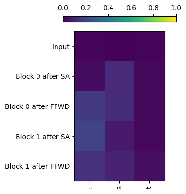

environment = get_environment()
print(f"environment is {environment.name}")environment is local_macBlockInternalsAccessors (prompt:str, eh:transformer_experiments.models.transformer_he lpers.EncodingHelpers, accessors:transformer_exp eriments.models.transformer_helpers.TransformerA ccessors)
Helper class that provides easy access to the block internals values for a given prompt.
environment is local_macts = TinyShakespeareDataSet(cache_file=environment.code_root / 'nbs/artifacts/input.txt')
m, tokenizer = create_model_and_tokenizer(
saved_model_filename=environment.code_root / 'nbs/artifacts/shakespeare-20231112.pt',
dataset=ts,
device=device,
)
_, val_data = split_text_dataset(ts.text, tokenizer, train_pct=0.9, device=device)
encoding_helpers = EncodingHelpers(tokenizer, device)
accessors = TransformerAccessors(m, device)# Tests for BlockInternalsAccessors
prompt = 'ROMEO:'
b = BlockInternalsAccessors(
prompt=prompt,
eh=encoding_helpers,
accessors=accessors,
)
# Test shapes of all the things.
test_eq(b.input_embedding().shape, (1, len(prompt), n_embed))
for block_idx in range(n_layer):
test_eq(b.block_input(block_idx).shape, (1, len(prompt), n_embed))
test_eq(b.heads_output(block_idx).shape, (1, len(prompt), n_embed))
test_eq(b.proj_output(block_idx).shape, (1, len(prompt), n_embed))
test_eq(b.ffwd_output(block_idx).shape, (1, len(prompt), n_embed))
test_eq(b.block_output(block_idx).shape, (1, len(prompt), n_embed))
# Logits produced by the model should be the same as the logits produced by
# the output of the last block.
logits, _ = m(encoding_helpers.tokenize_string(prompt))
test_close(logits, accessors.logits_from_embedding(b.block_output(n_layer-1)))BlockInternalsExperiment (eh:transformer_experiments.models.transformer_ helpers.EncodingHelpers, accessors:transformer_ experiments.models.transformer_helpers.Transfor merAccessors, strings:Sequence[str])
An experiment to run a bunch of inputs through the model and save the intermediate values produced within each block.
# Test for BlockInternalsExperiment
s_len = 3
strings = all_unique_substrings(ts.text[:100], s_len)
experiment = BlockInternalsExperiment(encoding_helpers, accessors, strings)
# Test the string_idx() method
for i, s in enumerate(strings):
test_eq(experiment.string_idx(s), i)
# Check that all the accessors return tensors of the expected shape.
for block_idx in range(n_layer):
test_eq(experiment.block_input(block_idx).shape, (len(strings), s_len, n_embed))
test_eq(experiment.heads_output(block_idx).shape, (len(strings), s_len, n_embed))
test_eq(experiment.proj_output(block_idx).shape, (len(strings), s_len, n_embed))
test_eq(experiment.ffwd_output(block_idx).shape, (len(strings), s_len, n_embed))
test_eq(experiment.block_output(block_idx).shape, (len(strings), s_len, n_embed))
# Run the strings through the model directly.
tokens = encoding_helpers.tokenize_strings(strings)
logits, _ = m(tokens)
# Logits generated from the last block output in the experiment should
# be the same as the logits produced by running the model directly.
last_block_output = experiment.block_output(n_layer - 1)
test_close(accessors.logits_from_embedding(last_block_output), logits)DistanceFunction (*args, **kwargs)
A protocol for a function that computes distances between a batch of data and a set of queries.
batch_distances (batch:torch.Tensor, queries:torch.Tensor)
Returns the distance between each item in the batch and the queries.
batch_cosine_sim (batch:torch.Tensor, queries:torch.Tensor)
Returns the cosine similarity between each item in the batch and the queries.
GetFilenameForBatchAndBlock (*args, **kwargs)
A protocol for a function that returns a filename for given batch and block indices.
BatchedBlockInternalsExperiment (eh:transformer_experiments.models.trans former_helpers.EncodingHelpers, accessor s:transformer_experiments.models.transfo rmer_helpers.TransformerAccessors, strings:Sequence[str], output_dir:pathlib.Path, batch_size:int=10000)
Similar to BlockInternalsExperiment but rather than running all strings as one batch through the model, this one runs them in batches and writes results to disk. This makes it possible to run the analysis on longer strings.
# Test for BatchedBlockInternalsExperiment
s_len = 3
strings = all_unique_substrings(ts.text[:100], s_len)
with tempfile.TemporaryDirectory() as tmpdirname:
experiment = BatchedBlockInternalsExperiment(
encoding_helpers, accessors, strings, output_dir=Path(tmpdirname), batch_size=10
)
test_eq(experiment.sample_length(), s_len)
experiment.run(disable_progress_bars=True)
# Test the string_idx() method
for i, s in enumerate(strings):
test_eq(experiment.string_idx(s), i)
prompts = [strings[i] for i in [10, 17, 1]] # indices are arbitrary
test_eq(prompts, ['zen', 'for', 'irs']) # ensure that something will fail if we change indices above
prompt_exp = BlockInternalsExperiment(encoding_helpers, accessors, prompts)
# Test closest embeddings
sim_strings, distances = experiment.strings_with_topk_closest_embeddings(
queries=prompt_exp.embeddings,
k=3,
largest=False
)
test_eq(sim_strings, [ # compare against known correct results
['zen', 'we ', 'her'],
['for', 'fur', 'Fir'],
['irs', 'ar ', 'urt']
])
test_close(distances.cpu(), torch.tensor([ # compare against known correct results
[0.0000, 0.0000, 0.0000],
[1.4657, 1.0683, 1.4207],
[1.4741, 1.2944, 1.4239]
]), eps=1e-4)
# Test closest proj outputs
block_idx = 0
t_i = -1
sim_strings, distances = experiment.strings_with_topk_closest_proj_outputs(
block_idx=block_idx,
t_i=t_i,
queries=prompt_exp.proj_output(block_idx)[:, t_i, :],
k=3,
largest=False,
)
test_eq(
sim_strings,
[
# fmt: off
['zen', 'ize', 'we '],
['for', 'roc', 'efo'],
['irs', 'urt', 'pro'],
# fmt: on
],
)
test_close(
distances.cpu(),
torch.tensor(
[ # compare against known correct results
# fmt: off
[0.0000, 0.0000, 0.0000],
[1.4794, 1.2580, 1.3404],
[1.4864, 1.4445, 1.3449],
# fmt: on
]
),
eps=1e-4,
)
# Test closest ffwd outputs
block_idx = 4
t_i = -1
sim_strings, distances = experiment.strings_with_topk_closest_ffwd_outputs(
block_idx=block_idx,
t_i=t_i,
queries=prompt_exp.ffwd_output(block_idx)[:, t_i, :],
k=3,
largest=False,
)
test_eq(
sim_strings,
[
# fmt: off
['zen', 'eak', 'the'],
['for', ' me', 'zen'],
['irs', 'urt', 'eak'],
# fmt: on
],
)
test_close(
distances.cpu(),
torch.tensor(
[ # compare against known correct results
# fmt: off
[0.0000, 0.0000, 0.0000],
[3.4993, 3.7176, 4.8893],
[3.5395, 3.7680, 4.9150],
# fmt: on
]
),
eps=1e-4,
)
# Test closest proj outputs with a non-final t_i
block_idx = 2
t_i = 1
sim_strings, distances = experiment.strings_with_topk_closest_proj_outputs(
block_idx=block_idx,
t_i=t_i,
queries=prompt_exp.proj_output(block_idx)[:, t_i, :],
k=3,
largest=False,
)
# Test that all strings have length t_i + 1
for i in range(3):
for j in range(len(prompts)):
test_eq(len(sim_strings[i][j]), t_i + 1)
test_eq(
sim_strings,
[
# fmt: off
['ze', 'rt', 'iz'],
['fo', 'fu', ' f'],
['ir', 'iz', 'it'],
# fmt: on
],
)
test_close(
distances.cpu(),
torch.tensor(
[ # compare against known correct results
# fmt: off
[0.0000, 0.0000, 0.0000],
[2.0715, 0.9072, 0.9928],
[2.1107, 1.6824, 1.0663],
# fmt: on
]
),
eps=1e-4,
)
# Test closest ffwd outputs with a non-final t_i
block_idx = 5
t_i = 1
sim_strings, distances = experiment.strings_with_topk_closest_ffwd_outputs(
block_idx=block_idx,
t_i=t_i,
queries=prompt_exp.ffwd_output(block_idx)[:, t_i, :],
k=3,
largest=False,
)
# Test that all strings have length t_i + 1
for i in range(3):
for j in range(len(prompts)):
test_eq(len(sim_strings[i][j]), t_i + 1)
test_eq(
sim_strings,
[
# fmt: off
['ze', 'ce', 'we'],
['fo', 'ti', 'st'],
['ir', 'ar', 'ur'],
# fmt: on
],
)
test_close(
distances.cpu(),
torch.tensor(
[ # compare against known correct results
# fmt: off
[0.0000, 0.0000, 0.0000],
[1.9583, 3.3032, 2.0351],
[2.0340, 3.3642, 2.2757],
# fmt: on
]
),
eps=1e-4,
)<Command run> (*args:Any, **kwargs:Any)
BlockInternalsAnalysis (accessors:transformer_experiments.models.transfor mer_helpers.TransformerAccessors, encoding_helper s:transformer_experiments.models.transformer_help ers.EncodingHelpers, prompt:str)
This class performs analysis of how the next token probabilities change as an embedded input is passed through each of the blocks in the model
bia = BlockInternalsAnalysis(accessors, encoding_helpers, prompt='Citizen')
bia.plot_subset(rows=[0, 1, 2, 3, 4], cols=[tokenizer.stoi[c] for c in ':st'])
# Sanity check for BlockInternalsAnalysis
# Run a prompt through the real model
prompt = 'Citizen'
tokens = encoding_helpers.tokenize_string(prompt)
logits, _ = m(tokens)
lw = LogitsWrapper(logits.cpu(), tokenizer)
# Run the same prompt through the analysis
bia = BlockInternalsAnalysis(accessors, encoding_helpers, prompt)
# The probabilities from the logits that came out of the model
# should be the same as the last row of data from the analysis.
test_close(lw.probs()[0, -1], bia.data[-1])
# Now run it through copied blocks we can look into
x = accessors.embed_tokens(tokens)
_, io_accessors = accessors.run_model(x)
# The probabilities from the embedded inputs should be the same as
# the first row of data from the analysis.
test_close(
LogitsWrapper(accessors.logits_from_embedding(x).cpu(), tokenizer).probs()[0, -1],
bia.data[0],
)
# The rows containing the inputs for each block should match what the io_accessors
# say the inputs are.
for block_idx, io_accessor in enumerate(io_accessors):
block_input = io_accessor.input('.')
lw = LogitsWrapper(accessors.logits_from_embedding(block_input).cpu(), tokenizer)
test_close(lw.probs()[0, -1], bia.data[bia.idx_input_probs(block_idx)])
# The rows containing the ffwd adjustments for each block should be the same
# as the outputs from the blocks.
for block_idx, io_accessor in enumerate(io_accessors):
block_output = io_accessor.output('.')
lw = LogitsWrapper(accessors.logits_from_embedding(block_output).cpu(), tokenizer)
test_close(lw.probs()[0, -1], bia.data[bia.idx_ffwd_probs(block_idx)])